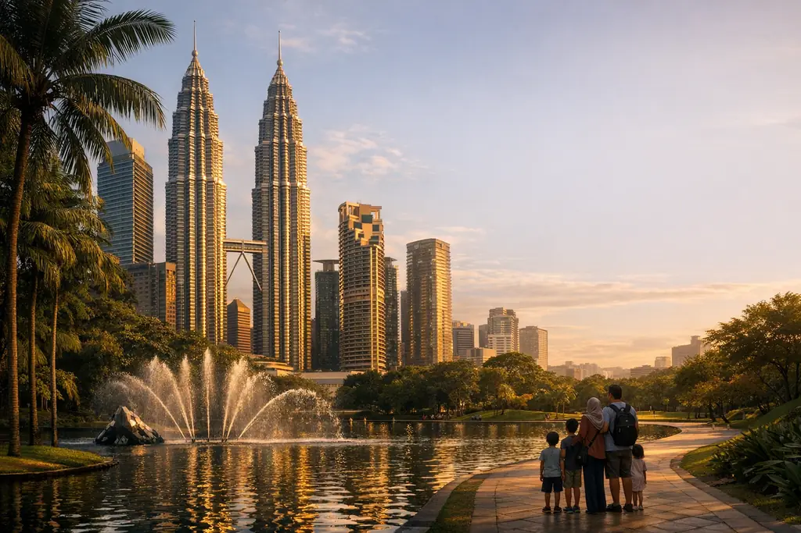

برنامج سياحي في تركيا 10 أيام للعائلات: إسطنبول وبورصة وطرابزون
برنامج عائلي متوازن لعشرة أيام في تركيا يجمع المدينة والطبيعة والثلج أو البحيرات، مع أفكار لأنشطة الأطفال ونصائح عملية للسكن والتنقل مع الصغار.

6 أيام • 5 ليالٍ • أذربيجان
باكو بين أسوار مدينتها القديمة وأبراجها الحديثة، ثم طبيعة قبالا الخضراء وتلفريك توفانداغ مروراً بشماخي التاريخية.
السياحة في أذربيجان تجمع بين مدينة عصرية على بحر قزوين وريف أخضر في سفوح القوقاز. في هذا البرنامج الممتد 6 أيام نكتشف باكو بمدينتها القديمة المدرجة على قائمة اليونسكو وأبراج اللهب الشهيرة، ثم نتجه إلى قبالا (قابالا) مروراً بشماخي ومسجدها الجامع العريق. وأذربيجان بلد ذو غالبية مسلمة تنتشر فيه المساجد والمطاعم الحلال، ويفهم كثير من أهله التركية، ما يسهّل التواصل على القادمين من إسطنبول.
الرحلة من إسطنبول إلى باكو تستغرق نحو ثلاث ساعات، والثقافة القريبة والطعام المألوف يجعلان أذربيجان وجهة مريحة للعائلات العربية. نوزّع الإقامة بين ثلاث ليالٍ في باكو وليلتين في قبالا، مع جولات بسيارة خاصة ووقت حر للتسوق والتنزه على الكورنيش. ويمكن تمديد البرنامج لزيارة قوبا ومنتجع شاه داغ. ونترك لك وقتاً لتذوق المطبخ الأذربيجاني الغني بالمشاوي وأطباق الأرز، في برنامج متوازن يناسب الزيارة الأولى.
استقبال في مطار حيدر علييف الدولي والتوجه إلى الفندق. بعد الراحة نتمشى مساءً على كورنيش باكو المطل على بحر قزوين، حيث تضيء أبراج اللهب سماء المدينة. ويمكن ختام اليوم في شارع نظامي بمتاجره ومقاهيه.
نبدأ من المدينة القديمة المسوّرة (إيتشري شهر)، ونزور برج العذراء وقصر شيروان شاه وأزقتها الحجرية. ثم نصعد إلى ممر الشهداء وحديقة المرتفعات لإطلالة على الخليج وأبراج اللهب. بعد الظهر نزور مركز حيدر علييف من تصميم المعمارية زها حديد، ونختم بجولة في فينيسيا الصغيرة على الكورنيش.
ننطلق غرباً نحو قبالا في طريق تتبدل فيه المناظر من السهول إلى الجبال الخضراء. نتوقف عند ضريح ديري بابا المشيّد في جرف صخري، ثم نزور مسجد الجمعة في شماخي، أحد أقدم المساجد في القوقاز. نصل إلى قبالا عصراً لتسجيل الدخول والراحة في أجواء جبلية منعشة.
نصعد بتلفريك منتجع توفانداغ لإطلالة واسعة على جبال القوقاز والغابات، ثم نزور بحيرة نوهور الهادئة المحاطة بالجبال. نكمل إلى شلال الجميلات السبع (يدي جوزل) بممشاه بين الأشجار. وللأطفال، يمكن قضاء وقت ممتع في مدينة ألعاب قبالا لاند.
نعود إلى باكو صباحاً، وبعد الوصول نزور يانار داغ، التلة التي تشتعل فيها النار طبيعياً من الغاز المنبعث من الأرض، ثم معبد النار أتشغاه في ضواحي العاصمة. المساء حر للتسوق في أحد المراكز التجارية أو لنزهة أخيرة على الكورنيش.
إفطار في الفندق ووقت حر حسب موعد رحلتك، ثم النقل إلى مطار حيدر علييف الدولي لرحلة العودة إلى إسطنبول.
| المدينة | الليالي | المقترح |
|---|---|---|
| باكو | 3 | فنادق 4 أو 5 نجوم قرب الكورنيش أو المدينة القديمة، لسهولة الوصول سيراً إلى المطاعم والمعالم. |
| قبالا | 2 | منتجع أو فندق جبلي في قبالا، ويفضّل كثير من العائلات المنتجعات ذات المساحات الخضراء والمسابح. |
احجز هذا البرنامج
أضف تاريخ الوصول وعدد المسافرين ومستوى الفنادق، ويصلك عرض مكتوب بالسعر النهائي عبر واتساب.
أسئلة وأجوبة
نعم، تتوفر تأشيرة إلكترونية عبر البوابة الرسمية لعدد من الجنسيات، وتصدر عادةً خلال أيام عمل قليلة، وبعض الجنسيات معفاة أصلاً. نؤكد لك وضع جنسيتك والرسوم الحالية عند الطلب، علماً أن الموافقة قرار السلطات وحدها.
باكو هي العاصمة العصرية على بحر قزوين، وقبالا (تُكتب أيضاً قابالا أو غابالا) منطقة جبلية خضراء على بعد نحو 220 كم. نقترح 3 ليالٍ في باكو وليلتين في قبالا لتجمع بين المدينة والطبيعة.
تعتمد التكلفة على الموسم وفئة الفندق وعدد المسافرين وتذاكر الطيران. أرسل لنا تواريخك وعدد الأشخاص عبر واتساب ونرسل لك عرضاً مفصلاً دون التزام.
أذربيجان تمنحك مدينة عصرية ومعالم إسلامية وثقافة قريبة، وجورجيا أغنى بالطبيعة الجبلية والقرى. ويمكن الجمع بينهما في رحلة واحدة. اطلع أيضاً على برنامج جورجيا 7 أيام.
من دليل أويا
برنامج عائلي متوازن لعشرة أيام في تركيا يجمع المدينة والطبيعة والثلج أو البحيرات، مع أفكار لأنشطة الأطفال ونصائح عملية للسكن والتنقل مع الصغار.

بدلاً من أرقام عامة لا تناسب رحلتك، نشرح لك مكونات تكلفة السفر إلى تركيا وما يرفعها ويخفضها، مع طريقة بسيطة لحساب ميزانية أسبوع ونصائح عملية للتوفير.

تركيا بلد بمناخات متعددة، فما يناسب إسطنبول قد لا يناسب أنطاليا أو أوزنجول في الشهر نفسه. دليل شهر بشهر يساعدك على اختيار التوقيت والوجهة معاً.
قد يعجبك أيضاً

أسبوع بين أزقة تبليسي القديمة وقمم القوقاز في كازبيجي وجودوري، ثم هدوء غابات بورجومي ومياهها المعدنية.

سراييفو بروحها العثمانية، وموستار وجسرها الشهير، وطبيعة نهر نيريتفا وبحيرة يابلانيتسا وشلالات كرافيتسا في أسبوع واحد.

مدينة حديثة ومرتفعات باردة وجزيرتان استوائيتان: كوالالمبور وجنتنج، ثم بينانج التاريخية وشواطئ لنكاوي.
خدمة شخصية من البداية للنهاية
نصمم لك برنامجاً خاصاً بعدد الأيام والمدن والفنادق التي تريدها — فقط أخبرنا.